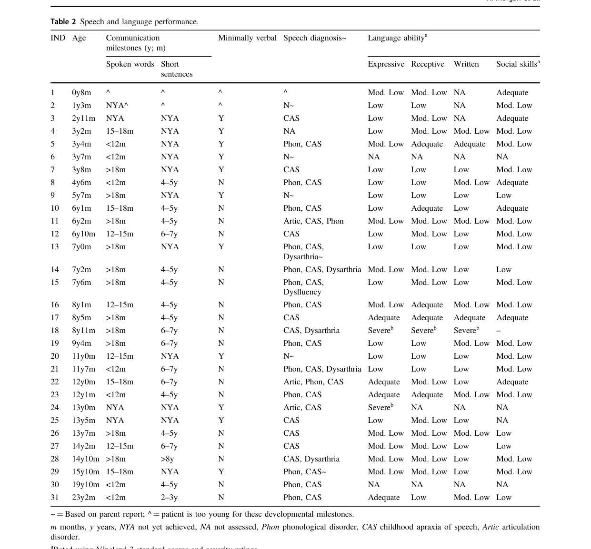

SETBP1 haploinsufficiency disorder (SETBP1-HD; intellectual disability, autosomal dominant 29 / MRD29) is an autosomal dominant neurodevelopmental disorder caused by heterozygous loss-of-function variants, deletions, or structural rearrangements that disrupt one copy of SETBP1. Reduced dosage of the SETBP1 transcription-factor / epigenetic-hub protein perturbs neural forebrain developmental programs, producing a characteristic phenotype of prominent expressive speech and language impairment (notably childhood apraxia of speech), intellectual ability ranging from normal to severe disability, mild motor developmental delay and hypotonia, attention/behavioral problems, and mild facial dysmorphism with refractive errors and strabismus. It is mechanistically distinct from Schinzel-Giedion syndrome, which is caused by SETBP1 degron-region gain-of-function variants and protein over-accumulation.
Ask a research question about SETBP1 Haploinsufficiency Disorder. OpenScientist will conduct autonomous deep research using the Disorder Mechanisms Knowledge Base and PubMed literature (typically 10-30 minutes).
Do not include personal health information in your question. Questions and results are cached in your browser's local storage.
Conditions with similar clinical presentations that must be differentiated from SETBP1 Haploinsufficiency Disorder:
name: SETBP1 Haploinsufficiency Disorder
creation_date: "2026-06-04T12:00:00Z"
category: Mendelian
description: >-
SETBP1 haploinsufficiency disorder (SETBP1-HD; intellectual disability,
autosomal dominant 29 / MRD29) is an autosomal dominant neurodevelopmental
disorder caused by heterozygous loss-of-function variants, deletions, or
structural rearrangements that disrupt one copy of SETBP1. Reduced dosage of
the SETBP1 transcription-factor / epigenetic-hub protein perturbs neural
forebrain developmental programs, producing a characteristic phenotype of
prominent expressive speech and language impairment (notably childhood apraxia
of speech), intellectual ability ranging from normal to severe disability,
mild motor developmental delay and hypotonia, attention/behavioral problems,
and mild facial dysmorphism with refractive errors and strabismus. It is
mechanistically distinct from Schinzel-Giedion syndrome, which is caused by
SETBP1 degron-region gain-of-function variants and protein over-accumulation.
disease_term:
preferred_term: SETBP1 haploinsufficiency disorder
term:
id: MONDO:0014482
label: intellectual disability, autosomal dominant 29
references:
- reference: PMID:34807554
title: "SETBP1 Haploinsufficiency Disorder."
tags:
- GeneReviews
pathophysiology:
- name: SETBP1 haploinsufficiency
description: >-
Heterozygous loss-of-function variants (nonsense, frameshift), intragenic
deletions, or structural rearrangements that interrupt SETBP1 reduce
functional SETBP1 protein to roughly half-normal dosage. SETBP1 encodes a
SET-binding nuclear protein that acts as a transcriptional regulator and
epigenetic hub; reduced dosage diminishes its regulatory activity in
developing neural tissue. Unlike Schinzel-Giedion syndrome (degron-region
gain-of-function, protein over-accumulation), SETBP1-HD results from
insufficient SETBP1.
cell_types:
- preferred_term: neural progenitor cell
term:
id: CL:0011020
label: neural progenitor cell
biological_processes:
- preferred_term: Regulation of transcription by RNA polymerase II
term:
id: GO:0006357
label: regulation of transcription by RNA polymerase II
modifier: DECREASED
evidence:
- reference: PMID:34807554
reference_title: "SETBP1 Haploinsufficiency Disorder."
supports: SUPPORT
evidence_source: HUMAN_CLINICAL
snippet: >-
The diagnosis of SETBP1-HD is established in a proband with suggestive findings and a heterozygous pathogenic loss-of-function variant in SETBP1 identified by molecular genetic testing.
explanation: >-
GeneReviews establishes that the disorder is caused by a heterozygous
loss-of-function variant in SETBP1, i.e., haploinsufficiency.
- reference: PMID:37150818
reference_title: "Identification of a novel de novo mutation of SETBP1 and new findings of SETBP1 in tumorgenesis."
supports: SUPPORT
evidence_source: HUMAN_CLINICAL
snippet: >-
Reduced SETBP1 expression was associated with SETBP1-HD.
explanation: >-
Directly links reduced SETBP1 dosage/expression to the haploinsufficiency
disorder.
downstream:
- target: Disrupted neurodevelopmental transcriptional programs
causal_link_type: DIRECT
evidence:
- reference: PMID:39350244
reference_title: "Identifying SETBP1 haploinsufficiency molecular pathways to improve patient diagnosis using induced pluripotent stem cells and neural disease modelling."
supports: SUPPORT
evidence_source: IN_VITRO
snippet: >-
We developed a human SETBP1-HD model and identified perturbations to the WNT and POL2RA pathway, genes regulated by GATA2.
explanation: >-
SETBP1-HD variants directly perturb downstream transcriptional and
signaling programs (WNT, POL2RA, GATA2) in neural cells.
- name: Disrupted neurodevelopmental transcriptional programs
description: >-
Reduced SETBP1 dosage perturbs key developmental signaling and transcription
pathways in neural cells. Isogenic CRISPR-edited iPSC neural models of
SETBP1-HD variants show altered WNT signaling and RNA polymerase II (POL2RA)
pathways, with GATA2 identified as a central transcription factor in the
disease perturbation, and altered expression of gene sets related to neural
forebrain development. SETBP1 forms nuclear bodies that interact with the
nuclear lamina and may organize higher-order chromatin, so dosage changes
influence global gene-expression patterns and signaling molecules such as
AKT.
cell_types:
- preferred_term: neural progenitor cell
term:
id: CL:0011020
label: neural progenitor cell
- preferred_term: neuron
term:
id: CL:0000540
label: neuron
biological_processes:
- preferred_term: Wnt signaling pathway
term:
id: GO:0016055
label: Wnt signaling pathway
modifier: ABNORMAL
- preferred_term: Forebrain development
term:
id: GO:0030900
label: forebrain development
modifier: ABNORMAL
evidence:
- reference: PMID:39350244
reference_title: "Identifying SETBP1 haploinsufficiency molecular pathways to improve patient diagnosis using induced pluripotent stem cells and neural disease modelling."
supports: SUPPORT
evidence_source: IN_VITRO
snippet: >-
We developed a human SETBP1-HD model and identified perturbations to the WNT and POL2RA pathway, genes regulated by GATA2.
explanation: >-
iPSC-derived neural model of SETBP1-HD variants identifies WNT and POL2RA
pathway perturbation and GATA2-centered dysregulation.
- reference: PMID:39350244
reference_title: "Identifying SETBP1 haploinsufficiency molecular pathways to improve patient diagnosis using induced pluripotent stem cells and neural disease modelling."
supports: SUPPORT
evidence_source: IN_VITRO
snippet: >-
In addition, the genetic variants altered the expression of gene sets related to neural forebrain development matching characteristics typical of the SETBP1-HD phenotype.
explanation: >-
Links SETBP1-HD variants to disrupted forebrain developmental gene
expression matching the clinical phenotype.
- reference: PMID:39825586
reference_title: "Reciprocal and non-reciprocal effects of clinically relevant SETBP1 protein dosage changes."
supports: SUPPORT
evidence_source: IN_VITRO
snippet: >-
We find that extremes of SETBP1 protein dose reciprocally influence important signalling molecules such as AKT, suggesting that the SETBP1 protein operates within a narrow dosage range and that extreme doses are detrimental.
explanation: >-
Patient-derived forebrain progenitor models show SETBP1 dosage extremes
(including haploinsufficiency) dysregulate AKT signaling.
downstream:
- target: Neurodevelopmental and speech-language impairment
causal_link_type: INDIRECT_UNKNOWN_INTERMEDIATES
evidence:
- reference: PMID:39350244
reference_title: "Identifying SETBP1 haploinsufficiency molecular pathways to improve patient diagnosis using induced pluripotent stem cells and neural disease modelling."
supports: SUPPORT
evidence_source: IN_VITRO
snippet: >-
In addition, the genetic variants altered the expression of gene sets related to neural forebrain development matching characteristics typical of the SETBP1-HD phenotype.
explanation: >-
Disrupted forebrain developmental gene expression links the molecular
perturbation to the clinical neurodevelopmental phenotype.
- name: Neurodevelopmental and speech-language impairment
description: >-
Disrupted forebrain developmental programs from reduced SETBP1 dosage
manifest clinically as a neurodevelopmental disorder in which protracted and
aberrant speech development is a central, consistent feature regardless of
motor or intellectual ability, accompanied by motor delay, hypotonia,
variable intellectual disability, and behavioral problems.
evidence:
- reference: PMID:33907317
reference_title: "Speech and language deficits are central to SETBP1 haploinsufficiency disorder."
supports: SUPPORT
evidence_source: HUMAN_CLINICAL
snippet: >-
Protracted and aberrant speech development was consistently seen, regardless of motor or intellectual ability.
explanation: >-
Speech-language impairment is the central, consistent downstream
manifestation of SETBP1 haploinsufficiency.
phenotypes:
- category: Behavioral
name: Childhood apraxia of speech
description: >-
Childhood apraxia of speech (CAS), a motor speech disorder affecting the
planning and programming of speech movements, is the most common speech
diagnosis in SETBP1-HD, found in 80% of a cohort of 31 affected individuals.
phenotype_term:
preferred_term: Childhood apraxia of speech
term:
id: HP:0011098
label: Speech apraxia
frequency: VERY_FREQUENT
evidence:
- reference: PMID:33907317
reference_title: "Speech and language deficits are central to SETBP1 haploinsufficiency disorder."
supports: SUPPORT
evidence_source: HUMAN_CLINICAL
snippet: >-
We expand the linguistic phenotype associated with SETBP1 LoF syndrome (SETBP1 haploinsufficiency disorder), revealing a striking speech presentation that implicates both motor (CAS, dysarthria) and language (phonological errors) systems, with CAS (80%) being the most common diagnosis.
explanation: >-
CAS was the most common diagnosis (80%) in the SETBP1-HD cohort,
supporting very frequent occurrence.
- category: Behavioral
name: Speech and language disorder
description: >-
A speech and language disorder is a defining feature of SETBP1-HD, including
deficits in the understanding and/or expression of words and sentences, with
language typically low-to-moderately impaired and commensurate expression
and comprehension ability.
phenotype_term:
preferred_term: Speech and language disorder
term:
id: HP:0002463
label: Language impairment
evidence:
- reference: PMID:34807554
reference_title: "SETBP1 Haploinsufficiency Disorder."
supports: SUPPORT
evidence_source: HUMAN_CLINICAL
snippet: >-
speech and language disorder; behavioral problems (most commonly attention/concentration deficits and hyperactivity, impulsivity), and refractive errors and strabismus.
explanation: >-
GeneReviews lists speech and language disorder as a core clinical
characteristic of SETBP1-HD.
- category: Behavioral
name: Expressive language impairment
description: >-
Expressive communication impairment is strongly associated with SETBP1
haploinsufficiency; in contrast to past reports, language understanding was
rarely better preserved than language expression.
phenotype_term:
preferred_term: Expressive language impairment
term:
id: HP:0002474
label: Expressive language delay
evidence:
- reference: PMID:33907317
reference_title: "Speech and language deficits are central to SETBP1 haploinsufficiency disorder."
supports: SUPPORT
evidence_source: HUMAN_CLINICAL
snippet: >-
Expressive communication impairment is associated with haploinsufficiency of SETBP1, as reported in small case series.
explanation: >-
Directly supports expressive communication impairment as a feature of
SETBP1 haploinsufficiency.
- category: Behavioral
name: Dysarthria
description: >-
Dysarthria, a motor speech disorder affecting speech articulation, is part
of the motor speech presentation in SETBP1-HD alongside childhood apraxia of
speech.
phenotype_term:
preferred_term: Dysarthria
term:
id: HP:0001260
label: Dysarthria
evidence:
- reference: PMID:33907317
reference_title: "Speech and language deficits are central to SETBP1 haploinsufficiency disorder."
supports: SUPPORT
evidence_source: HUMAN_CLINICAL
snippet: >-
revealing a striking speech presentation that implicates both motor (CAS, dysarthria) and language (phonological errors) systems
explanation: >-
Dysarthria is documented as part of the motor speech phenotype in the
SETBP1-HD cohort.
- category: Physical
name: Intellectual disability
description: >-
Intellectual ability in SETBP1-HD ranges from normal to severe disability;
intellectual impairment was reported in 68% of a cohort of 31 affected
individuals.
phenotype_term:
preferred_term: Intellectual disability
term:
id: HP:0001249
label: Intellectual disability
frequency: FREQUENT
evidence:
- reference: PMID:33907317
reference_title: "Speech and language deficits are central to SETBP1 haploinsufficiency disorder."
supports: SUPPORT
evidence_source: HUMAN_CLINICAL
snippet: >-
Gross and fine motor deficits (94%) and intellectual impairments (68%) were common.
explanation: >-
Intellectual impairment occurred in 68% of the cohort, supporting frequent
occurrence.
- category: Physical
name: Motor developmental delay
description: >-
Mild motor developmental delay with gross and fine motor deficits is common
in SETBP1-HD, reported in 94% of a cohort of 31 affected individuals.
phenotype_term:
preferred_term: Motor developmental delay
term:
id: HP:0001270
label: Motor delay
frequency: VERY_FREQUENT
evidence:
- reference: PMID:33907317
reference_title: "Speech and language deficits are central to SETBP1 haploinsufficiency disorder."
supports: SUPPORT
evidence_source: HUMAN_CLINICAL
snippet: >-
Gross and fine motor deficits (94%) and intellectual impairments (68%) were common.
explanation: >-
Gross and fine motor deficits occurred in 94% of the cohort, supporting
very frequent motor delay.
- category: Physical
name: Hypotonia
description: >-
Hypotonia (low muscle tone) is a recognized feature of SETBP1-HD, listed
among its core clinical characteristics in GeneReviews.
phenotype_term:
preferred_term: Hypotonia
term:
id: HP:0001252
label: Hypotonia
evidence:
- reference: PMID:34807554
reference_title: "SETBP1 Haploinsufficiency Disorder."
supports: SUPPORT
evidence_source: HUMAN_CLINICAL
snippet: >-
SETBP1 haploinsufficiency disorder (SETBP1-HD) is characterized by hypotonia and mild motor developmental delay
explanation: >-
GeneReviews lists hypotonia as a core clinical characteristic of
SETBP1-HD.
- category: Behavioral
name: Attention deficit hyperactivity disorder
description: >-
Behavioral problems in SETBP1-HD most commonly include attention and
concentration deficits, hyperactivity, and impulsivity.
phenotype_term:
preferred_term: Attention deficit hyperactivity disorder
term:
id: HP:0007018
label: Attention deficit hyperactivity disorder
evidence:
- reference: PMID:34807554
reference_title: "SETBP1 Haploinsufficiency Disorder."
supports: SUPPORT
evidence_source: HUMAN_CLINICAL
snippet: >-
behavioral problems (most commonly attention/concentration deficits and hyperactivity, impulsivity)
explanation: >-
GeneReviews identifies attention/concentration deficits, hyperactivity,
and impulsivity as the most common behavioral problems in SETBP1-HD.
- category: Physical
name: Strabismus
description: >-
Strabismus (ocular misalignment) is a recognized ophthalmologic feature of
SETBP1-HD.
phenotype_term:
preferred_term: Strabismus
term:
id: HP:0000486
label: Strabismus
evidence:
- reference: PMID:34807554
reference_title: "SETBP1 Haploinsufficiency Disorder."
supports: SUPPORT
evidence_source: HUMAN_CLINICAL
snippet: >-
and refractive errors and strabismus.
explanation: >-
GeneReviews lists strabismus among the core clinical characteristics of
SETBP1-HD.
- category: Physical
name: Refractive error
description: >-
Refractive errors are a recognized ophthalmologic feature of SETBP1-HD.
phenotype_term:
preferred_term: Refractive error
term:
id: HP:0000539
label: Abnormality of refraction
evidence:
- reference: PMID:34807554
reference_title: "SETBP1 Haploinsufficiency Disorder."
supports: SUPPORT
evidence_source: HUMAN_CLINICAL
snippet: >-
and refractive errors and strabismus.
explanation: >-
GeneReviews lists refractive errors among the core clinical
characteristics of SETBP1-HD.
- category: Physical
name: Facial dysmorphism
description: >-
Mild facial dysmorphisms are part of the SETBP1-HD phenotype as described in
iPSC neural disease-modeling studies summarizing the disorder.
phenotype_term:
preferred_term: Mild facial dysmorphism
term:
id: HP:0001999
label: Abnormal facial shape
evidence:
- reference: PMID:39350244
reference_title: "Identifying SETBP1 haploinsufficiency molecular pathways to improve patient diagnosis using induced pluripotent stem cells and neural disease modelling."
supports: SUPPORT
evidence_source: HUMAN_CLINICAL
snippet: >-
SETBP1 Haploinsufficiency Disorder (SETBP1-HD) is characterised by mild to moderate intellectual disability, speech and language impairment, mild motor developmental delay, behavioural issues, hypotonia, mild facial dysmorphisms, and vision impairment.
explanation: >-
The disorder is characterized as including mild facial dysmorphisms.
genetic:
- name: SETBP1
association: Heterozygous loss-of-function variants, deletions, and structural rearrangements (haploinsufficiency)
gene_term:
preferred_term: SETBP1
term:
id: hgnc:15573
label: SETBP1
inheritance:
- name: Autosomal Dominant
de_novo_rate: "80"
evidence:
- reference: PMID:34807554
reference_title: "SETBP1 Haploinsufficiency Disorder."
supports: SUPPORT
evidence_source: HUMAN_CLINICAL
snippet: >-
SETBP1-HD is an autosomal dominant disorder typically caused by a de novo pathogenic variant.
explanation: >-
GeneReviews establishes autosomal dominant inheritance, most often de
novo.
notes: >-
SETBP1-HD is caused by heterozygous loss-of-function SETBP1 variants
(nonsense, frameshift), intragenic deletions, or structural rearrangements
that disrupt the gene, resulting in haploinsufficiency. Most cases are de
novo; rarely the variant is inherited from a parent with germline (or
somatic and germline) mosaicism. This is mechanistically distinct from the
degron-region gain-of-function variants causing Schinzel-Giedion syndrome.
evidence:
- reference: PMID:34807554
reference_title: "SETBP1 Haploinsufficiency Disorder."
supports: SUPPORT
evidence_source: HUMAN_CLINICAL
snippet: >-
SETBP1-HD is an autosomal dominant disorder typically caused by a de novo pathogenic variant.
explanation: >-
GeneReviews establishes autosomal dominant inheritance, typically de novo.
- reference: PMID:34807554
reference_title: "SETBP1 Haploinsufficiency Disorder."
supports: SUPPORT
evidence_source: HUMAN_CLINICAL
snippet: >-
Rarely, individuals with SETBP1-HD may have the disorder as the result of a SETBP1 pathogenic variant inherited from a parent with germline (or somatic and germline) mosaicism.
explanation: >-
Documents rare inherited cases via parental mosaicism.
- reference: PMID:38520002
reference_title: "Structural rearrangements as a recurrent pathogenic mechanism for SETBP1 haploinsufficiency."
supports: SUPPORT
evidence_source: HUMAN_CLINICAL
snippet: >-
We propose structural variants as a recurrent event in SETBP1 haploinsufficiency, which may be overlooked by laboratory routine genomic analyses (CMA and Whole Exome Sequencing) or only partially determined when associated with genomic losses at breakpoints.
explanation: >-
Establishes structural rearrangements disrupting SETBP1 as a recurrent
haploinsufficiency mechanism that can be missed by CMA/WES.
- reference: PMID:38585550
reference_title: "Delayed Bone Age in a Child with a Novel Loss-of-Function Variant in SETBP1 Gene Sheds Light on the Potential Role of SETBP1 Protein in Skeletal Development."
supports: SUPPORT
evidence_source: HUMAN_CLINICAL
snippet: >-
SETBP1 gene variants that decrease or eliminate protein activity have been associated with phenotypes characterized by speech apraxia and intellectual disabilities. This condition, distinctly separated from Schinzel-Giedion syndrome, is referred to as autosomal dominant mental retardation 29 (ADR29).
explanation: >-
Confirms loss-of-function SETBP1 variants cause MRD29/SETBP1-HD, distinct
from Schinzel-Giedion syndrome.
treatments:
- name: Speech and language therapy
description: >-
Speech-language pathology is central to SETBP1-HD management given the
prominent speech and language disorder; minimally verbal children may augment
speech with sign language, gestures, or digital (augmentative and
alternative communication) devices.
treatment_term:
preferred_term: speech therapy
term:
id: MAXO:0000930
label: speech therapy
evidence:
- reference: PMID:33907317
reference_title: "Speech and language deficits are central to SETBP1 haploinsufficiency disorder."
supports: SUPPORT
evidence_source: HUMAN_CLINICAL
snippet: >-
Minimally verbal children (32%) augmented speech with sign language, gestures or digital devices.
explanation: >-
Supports speech therapy and augmentative/alternative communication given
the high proportion of minimally verbal children.
- name: Multidisciplinary supportive care
description: >-
Treatment is supportive, often including multidisciplinary specialists from
pediatrics, neurology, physiatry, occupational and physical therapy,
speech-language pathology, psychiatry, ophthalmology, and medical genetics,
with early intervention and special education programs to address
developmental disabilities.
treatment_term:
preferred_term: supportive care
term:
id: MAXO:0000950
label: supportive care
evidence:
- reference: PMID:34807554
reference_title: "SETBP1 Haploinsufficiency Disorder."
supports: SUPPORT
evidence_source: HUMAN_CLINICAL
snippet: >-
Treatment is supportive, often including multidisciplinary specialists from pediatrics, neurology, physiatry, occupational and physical therapy, speech-language pathology, psychiatry, ophthalmology, and medical genetics.
explanation: >-
GeneReviews describes multidisciplinary supportive care as the management
approach for SETBP1-HD.
- name: Occupational therapy
description: >-
Occupational therapy is part of the multidisciplinary supportive management
of SETBP1-HD, addressing fine motor and adaptive skill deficits.
treatment_term:
preferred_term: occupational therapy
term:
id: MAXO:0001351
label: occupational therapy
evidence:
- reference: PMID:34807554
reference_title: "SETBP1 Haploinsufficiency Disorder."
supports: SUPPORT
evidence_source: HUMAN_CLINICAL
snippet: >-
Treatment is supportive, often including multidisciplinary specialists from pediatrics, neurology, physiatry, occupational and physical therapy, speech-language pathology, psychiatry, ophthalmology, and medical genetics.
explanation: >-
GeneReviews lists occupational therapy among the supportive
multidisciplinary interventions for SETBP1-HD.
- name: Behavioral intervention
description: >-
Psychiatric and behavioral interventions address the attention/concentration
deficits, hyperactivity, and impulsivity that are the most common behavioral
problems in SETBP1-HD.
treatment_term:
preferred_term: cognitive and behavioral intervention
term:
id: MAXO:0000010
label: cognitive and behavioral intervention
evidence:
- reference: PMID:34807554
reference_title: "SETBP1 Haploinsufficiency Disorder."
supports: SUPPORT
evidence_source: HUMAN_CLINICAL
snippet: >-
Surveillance: Monitoring of: feeding and weight gain; developmental/educational progress and needs; speech and language progress and needs; psychiatric and behavioral interventions; ophthalmologic interventions.
explanation: >-
GeneReviews includes psychiatric and behavioral interventions in the
management and surveillance of SETBP1-HD.
- name: Genetic counseling
description: >-
Genetic counseling addresses the autosomal dominant inheritance (typically
de novo) and the rare recurrence risk from parental germline mosaicism; once
the variant is identified, prenatal and preimplantation genetic testing are
possible.
treatment_term:
preferred_term: genetic counseling
term:
id: MAXO:0000079
label: genetic counseling
evidence:
- reference: PMID:34807554
reference_title: "SETBP1 Haploinsufficiency Disorder."
supports: SUPPORT
evidence_source: HUMAN_CLINICAL
snippet: >-
Once the SETBP1 pathogenic variant has been identified in an affected family member, prenatal and preimplantation genetic testing are possible.
explanation: >-
GeneReviews supports genetic counseling, including prenatal and
preimplantation genetic testing options.
differential_diagnoses:
- name: Schinzel-Giedion syndrome
disease_term:
preferred_term: Schinzel-Giedion syndrome
term:
id: MONDO:0010010
label: Schinzel-Giedion syndrome
description: >-
Schinzel-Giedion syndrome is also caused by germline SETBP1 variants but
arises from degron-region gain-of-function variants causing protein
over-accumulation, producing a far more severe multisystem disorder.
distinguishing_features:
- Degron-region (exon 4) gain-of-function missense variants with severe multisystem congenital anomalies, refractory epilepsy, and tumor predisposition favor Schinzel-Giedion syndrome.
- Loss-of-function variants or gene-disrupting rearrangements with milder speech-dominant neurodevelopmental phenotype favor SETBP1 haploinsufficiency disorder.
evidence:
- reference: PMID:38585550
reference_title: "Delayed Bone Age in a Child with a Novel Loss-of-Function Variant in SETBP1 Gene Sheds Light on the Potential Role of SETBP1 Protein in Skeletal Development."
supports: SUPPORT
evidence_source: HUMAN_CLINICAL
snippet: >-
This condition, distinctly separated from Schinzel-Giedion syndrome, is referred to as autosomal dominant mental retardation 29 (ADR29).
explanation: >-
SETBP1-HD (MRD29/ADR29) is explicitly distinguished from Schinzel-Giedion
syndrome in the literature.
clinical_trials: []
datasets:
- accession: PMID:33907317
title: Speech and language deficits are central to SETBP1 haploinsufficiency disorder.
description: >-
Human cohort dataset of 31 individuals with SETBP1 haploinsufficiency
disorder (28 with pathogenic SETBP1 loss-of-function variants, 3 with
18q12.3 deletions) assessed for speech, language, literacy, and broader
motor, social, and daily-living development.
organism:
preferred_term: human
term:
id: NCBITaxon:9606
label: Homo sapiens
sample_count: 31
conditions:
- SETBP1 Haploinsufficiency Disorder
publication: PMID:33907317
evidence:
- reference: PMID:33907317
reference_title: "Speech and language deficits are central to SETBP1 haploinsufficiency disorder."
supports: SUPPORT
evidence_source: HUMAN_CLINICAL
snippet: >-
Thirty-one participants (12 males, aged 0; 8-23; 2 years, 28 with pathogenic SETBP1 LoF variants, 3 with 18q12.3 deletions) were assessed for speech, language and literacy abilities.
explanation: >-
Defines the SETBP1-HD cohort dataset characterizing the speech-language
phenotype.
SETBP1-related disorders are Mendelian neurodevelopmental conditions caused by germline heterozygous SETBP1 variants with distinct mechanisms and phenotypes: (i) SETBP1 haploinsufficiency disorder (SETBP1-HD) (typically loss-of-function / reduced dosage) and (ii) Schinzel–Giedion syndrome (SGS) (typically gain-of-function due to impaired degron-mediated degradation causing protein accumulation). (duis2024schinzelgiedionsyndrome pages 1-4, wang2023identificationofa pages 1-2)
Not found in retrieved evidence: MONDO ID, Orphanet ID, MeSH ID, ICD-10/ICD-11 codes (would require targeted retrieval from those databases).
Information below is derived from aggregated disease-level resources (GeneReviews-style chapter) and primary literature/case series; it is not from EHR-only sources. (duis2024schinzelgiedionsyndrome pages 1-4, morgan2021speechandlanguage pages 1-2)
Primary cause: germline heterozygous pathogenic variants affecting SETBP1 dosage or stability/function. (duis2024schinzelgiedionsyndrome pages 1-4, wang2023identificationofa pages 1-2)
For a Mendelian, typically de novo disorder, conventional environmental risk factors are not established in the retrieved literature.
Not established in retrieved sources for these Mendelian conditions.
Clinical summary: mild–moderate intellectual disability and prominent speech/language impairment with associated motor and behavioral features. (shaw2024identifyingsetbp1haploinsufficiency pages 1-2)
Core speech/language phenotype (human cohort data): In a cohort of 31 individuals with SETBP1 haploinsufficiency (truncating variants/deletions), childhood apraxia of speech (CAS) was the most common diagnosis (80%) and many had additional speech disorders such as phonological disorder (48%), dysarthria (16%), and others; 32% were minimally verbal and used augmentative methods (AAC/sign/gestures/devices). (morgan2021speechandlanguage pages 1-2, morgan2021speechandlanguage pages 7-8)
Neurodevelopment and associated features: gross and/or fine motor deficits were common (94%), intellectual impairment reported in 68%, attention issues were frequent (55%), and ASD diagnosis was reported in a minority despite frequent autistic traits. (morgan2021speechandlanguage pages 1-2, morgan2021speechandlanguage pages 3-5)
Recent (2024) molecular model paper phenotype statement: SETBP1-HD described as characterized by mild to moderate intellectual disability, speech and language impairment, mild motor developmental delay, behavioural issues, hypotonia, mild facial dysmorphisms, and vision impairment. (shaw2024identifyingsetbp1haploinsufficiency pages 1-2)
HPO term suggestions (non-exhaustive; based on retrieved phenotype descriptions): - Speech apraxia / CAS: HP:0002472 (Childhood onset of impaired motor planning for speech) (supported by CAS frequency) (morgan2021speechandlanguage pages 1-2) - Speech delay: HP:0000750 (shaw2024identifyingsetbp1haploinsufficiency pages 1-2) - Language impairment: HP:0002463 (morgan2021speechandlanguage pages 1-2) - Intellectual disability: HP:0001249 (shaw2024identifyingsetbp1haploinsufficiency pages 1-2) - Hypotonia: HP:0001252 (shaw2024identifyingsetbp1haploinsufficiency pages 1-2) - Motor delay: HP:0001270 (morgan2021speechandlanguage pages 1-2) - Attention deficit: HP:0007018 (morgan2021speechandlanguage pages 3-5) - Strabismus: HP:0000486 (noted in SETBP1-HD description) (duis2024schinzelgiedionsyndrome pages 12-15)
Quality-of-life/functional impact: Communication deficits can be disproportionately severe relative to other adaptive domains and often necessitate AAC and special education supports. (morgan2021speechandlanguage pages 1-2, morgan2021speechandlanguage pages 3-5)
Clinical summary: ultra-rare multisystem neurodevelopmental disorder with severe developmental impairment and congenital anomalies; classic SGS is typically caused by SETBP1 gain-of-function hotspot variants. (duis2024schinzelgiedionsyndrome pages 1-4)
Key phenotype ranges/frequencies (GeneReviews chapter excerpt): - Epilepsy 75–100% (often refractory) (duis2024schinzelgiedionsyndrome pages 7-10) - Hypotonia 75–100%, often evolving to spasticity (duis2024schinzelgiedionsyndrome pages 7-10) - Cerebral visual impairment about ~70–80% (duis2024schinzelgiedionsyndrome pages 7-10) - Hearing impairment: reported 75–100%; text notes nearly 90% (duis2024schinzelgiedionsyndrome pages 7-10) - Congenital anomalies of kidney/urinary tract (CAKUT) 75–100% (duis2024schinzelgiedionsyndrome pages 7-10) - Neoplasia risk 20–50% overall range; another excerpt notes neoplasia occurs in ~25% (neuroepithelial tumors; sacrococcygeal teratoma common) (duis2024schinzelgiedionsyndrome pages 7-10, duis2024schinzelgiedionsyndrome pages 10-12) - Microcephaly ~80%, typically postnatal (duis2024schinzelgiedionsyndrome pages 10-12)
Natural history/prognosis: life span is shortened; mortality is most often due to pneumonia (often aspiration-related), with other reported causes including sepsis, lung hypoplasia, intractable epilepsy, and sudden cardiac arrest. (duis2024schinzelgiedionsyndrome pages 10-12)
HPO term suggestions (non-exhaustive): - Severe global developmental delay: HP:0001263 (duis2024schinzelgiedionsyndrome pages 1-4) - Intellectual disability (moderate-to-profound): HP:0002342 / HP:0001249 (duis2024schinzelgiedionsyndrome pages 1-4) - Seizures (often refractory): HP:0001250 (duis2024schinzelgiedionsyndrome pages 7-10) - Hypotonia: HP:0001252 (duis2024schinzelgiedionsyndrome pages 7-10) - Spasticity: HP:0001257 (duis2024schinzelgiedionsyndrome pages 1-4) - Microcephaly: HP:0000252 (duis2024schinzelgiedionsyndrome pages 10-12) - Hydronephrosis: HP:0000126 (duis2024schinzelgiedionsyndrome pages 10-12) - Midface retrusion: HP:0011800 (duis2024schinzelgiedionsyndrome pages 4-7)
SGS (classic): - Typically heterozygous missense variants in a 12-bp degron hotspot (exon 4; aa 868–871) within the SKI domain; disrupt degradation → increased protein stability/accumulation (gain-of-function). (duis2024schinzelgiedionsyndrome pages 23-25) - Example hotspot variants listed in GeneReviews excerpt include p.Asp868Asn, p.Ser869Gly, p.Ile871Thr (among others). (duis2024schinzelgiedionsyndrome pages 23-25) - A 2024 case report described a non-degron variant adjacent to the hotspot (D874V) causing canonical SGS, expanding variant spectrum beyond the canonical residues. (zheng2024novelsetbp1d874v pages 1-2)
SETBP1-HD / MRD29: - Loss-of-function variants (frameshift/nonsense) and deletions; can be classified as pathogenic per ACMG in case reports. (miolo2024delayedboneage pages 2-4) - Structural rearrangements (including balanced reciprocal translocations) disrupting SETBP1 are a recurrent mechanism and may be missed by CMA/WES. (alesi2024structuralrearrangementsas pages 1-2, alesi2024structuralrearrangementsas pages 10-12)
ClinVar uncertainty burden (diagnostic bottleneck): As of 3 April 2024, 562/1,444 single-gene SETBP1 variants in ClinVar were classified as VUS (reported in Shaw et al.). (shaw2024identifyingsetbp1haploinsufficiency pages 1-2)
Autosomal dominant; most cases are de novo; rare familial transmission and parental mosaicism have been reported for SGS. (duis2024schinzelgiedionsyndrome pages 1-4, duis2024schinzelgiedionsyndrome pages 20-23)
Not clearly established for SETBP1-related disorders in the retrieved evidence.
No established environmental triggers or infectious causes are described in the retrieved evidence; these are primarily genetic Mendelian disorders.
Human iPSC/CRISPR neurodevelopmental modelling (SETBP1-HD): CRISPR-edited isogenic iPSCs differentiated into neural lineages implicated perturbation of WNT pathway, RNA polymerase II/POL2RA pathway, and identified GATA2 as a central transcription factor in disease perturbation; gene sets related to neural forebrain development were altered. (shaw2024identifyingsetbp1haploinsufficiency pages 1-2)
Dose sensitivity and signaling (SGS vs SHD/SETBP1-HD) in forebrain progenitors: Patient-derived iPSC → forebrain neural progenitor cell models suggest extremes of SETBP1 protein dosage influence key signaling molecules such as AKT, consistent with a narrow tolerated dosage window; SETBP1 forms nuclear bodies that interact with the nuclear lamina, with a proposed role in organizing higher-order chromatin structure and influencing global gene expression. (antonyan2025reciprocalandnonreciprocal pages 1-2, antonyan2025reciprocalandnonreciprocal pages 9-12)
GTEx analysis across 31 adult tissues found SETBP1 ubiquitously expressed (median TPM range 0.364–16.719; highest median in cervix/blood vessel/uterus; lowest in blood/bone marrow/adrenal), and SETBP1 target sets enriched for transcription regulation/DNA binding and mitochondrial function; a Shiny resource was provided for TF activity across tissues. (whitlock2024thelandscapeof pages 4-7, whitlock2024thelandscapeof pages 7-9)
GO biological process (illustrative suggestions; to be curated with GO evidence): - WNT signaling pathway: GO:0016055 (shaw2024identifyingsetbp1haploinsufficiency pages 1-2) - Regulation of transcription by RNA polymerase II: GO:0006357 (shaw2024identifyingsetbp1haploinsufficiency pages 1-2) - Forebrain development: GO:0030900 (shaw2024identifyingsetbp1haploinsufficiency pages 1-2)
Cell types (CL suggestions, consistent with iPSC-derived neural models): - Neural progenitor cell: CL:0000047 (antonyan2025reciprocalandnonreciprocal pages 1-2) - Astrocyte: CL:0000127 (noted differentiation outputs in forebrain models) (antonyan2025reciprocalandnonreciprocal pages 2-4)
Commonly involved systems include nervous system, kidney/urinary tract, heart, skeleton, and sensory systems (hearing/vision). (duis2024schinzelgiedionsyndrome pages 1-4, duis2024schinzelgiedionsyndrome pages 7-10)
UBERON suggestions (non-exhaustive): - Brain: UBERON:0000955 (duis2024schinzelgiedionsyndrome pages 1-4) - Kidney: UBERON:0002113 (duis2024schinzelgiedionsyndrome pages 10-12) - Heart: UBERON:0000948 (duis2024schinzelgiedionsyndrome pages 10-12)
Primarily neurodevelopmental (speech/language, motor control), with vision issues such as strabismus reported. (shaw2024identifyingsetbp1haploinsufficiency pages 1-2, duis2024schinzelgiedionsyndrome pages 12-15)
Often recognized in infancy due to congenital anomalies, characteristic facial features, feeding problems, hypotonia, and early-onset seizures. (duis2024schinzelgiedionsyndrome pages 1-4, duis2024schinzelgiedionsyndrome pages 4-7)
Typically pediatric onset with early speech and motor delays; language trajectories can be markedly protracted. (morgan2021speechandlanguage pages 8-9, morgan2021speechandlanguage pages 1-2)
Not found in retrieved evidence: prevalence/incidence estimates for SGS or SETBP1-HD.
Autosomal dominant, typically de novo, with rare inherited transmission and parental mosaicism noted (SGS). (duis2024schinzelgiedionsyndrome pages 1-4)
Classic SGS can be diagnosed clinically using published criteria (Lehman et al. 2008 referenced), but definitive diagnosis is via identifying a heterozygous SETBP1 gain-of-function variant in the exon 4 degron hotspot. (duis2024schinzelgiedionsyndrome pages 4-7)
Not systematically extracted from retrieved evidence (would require additional targeted sources).
Outcome is variable; communication impairment is often substantial and may require AAC and intensive speech-language therapy; literacy is frequently affected. (morgan2021speechandlanguage pages 1-2, morgan2021speechandlanguage pages 7-8)
No curative therapy is available for SGS; management is supportive and surveillance-based. (duis2024schinzelgiedionsyndrome pages 1-4)
SGS: supportive multidisciplinary care and surveillance, including feeding support (tubes often necessary), PT/OT, AAC consideration, and tumor screening protocols (liver US+AFP q3mo until age 4; renal US q3mo until age 10; pelvic MRI for sacrococcygeal teratoma; monitor for leukemia). (duis2024schinzelgiedionsyndrome pages 18-20, duis2024schinzelgiedionsyndrome pages 20-23)
SETBP1-HD: early intervention with speech therapy, multimodal communication (AAC/sign), and targeted speech-motor and phonological/literacy interventions are recommended based on cohort observations of severe and persistent speech/language deficits. (morgan2021speechandlanguage pages 8-9, morgan2021speechandlanguage pages 1-2)
MAXO term suggestions (illustrative): - Speech therapy: MAXO:0000058 (therapy for communication impairment) (supported by clinical recommendations) (morgan2021speechandlanguage pages 8-9) - Augmentative and alternative communication: map to communication assistive technology intervention (needs MAXO exact term curation; concept supported) (duis2024schinzelgiedionsyndrome pages 18-20) - Surveillance imaging (renal ultrasound, liver ultrasound, MRI): preventive screening intervention (MAXO curation needed) (duis2024schinzelgiedionsyndrome pages 20-23)
No interventional trials specifically targeting SETBP1-related neurodevelopmental disorders were identified in the retrieved clinical-trials evidence; however, a major real-world research implementation is participation in genetics-first registries (see below). (NCT01238250 chunk 1)
Primary prevention is not established for de novo Mendelian disorders.
Secondary/tertiary prevention: supportive care and surveillance (particularly tumor surveillance in classic SGS; early developmental therapies and AAC for communication impairment). (duis2024schinzelgiedionsyndrome pages 20-23, morgan2021speechandlanguage pages 8-9)
Prenatal and preimplantation genetic testing are possible if a familial pathogenic variant is known; recurrence risk is usually low but increased by parental mosaicism. (duis2024schinzelgiedionsyndrome pages 20-23)
Not established in retrieved evidence.
Human cell models (most directly relevant in retrieved evidence): - iPSC-derived neural differentiation models with CRISPR-introduced SETBP1 variants (SETBP1-HD modeling) used to detect pathway perturbations (WNT, POL2RA; GATA2). (shaw2024identifyingsetbp1haploinsufficiency pages 1-2) - Patient-derived iPSC forebrain neural progenitor models comparing SGS vs SHD/SETBP1-HD dose extremes (AKT signaling; nuclear bodies interacting with nuclear lamina). (antonyan2025reciprocalandnonreciprocal pages 1-2)
Non-human animal model evidence: not directly retrieved here.
Functional genomics for diagnosis (2024): Shaw et al. used isogenic CRISPR-edited iPSCs differentiated into neural cells to model SETBP1-HD variants and identified perturbed pathways (WNT, POL2RA) and GATA2-centered regulatory changes, explicitly positioned as a route to interpret VUS in the setting of substantial ClinVar uncertainty (562/1,444 single-gene SETBP1 variants as VUS on 2024-04-03). URL: https://doi.org/10.1186/s13229-024-00625-1 (published Sep 2024). (shaw2024identifyingsetbp1haploinsufficiency pages 1-2)
Structural variant diagnostics (2024): Alesi et al. showed that balanced chromosomal rearrangements interrupting SETBP1 can be missed by CMA and require optical genome mapping + WGS to characterize; 2/3 of reported cases were CMA-negative due to balanced architecture. URL: https://doi.org/10.1186/s40246-024-00600-0 (published Mar 2024). (alesi2024structuralrearrangementsas pages 1-2)
Updated clinical synthesis (2024): Duis & van Bon provide a GeneReviews-style synthesis of SGS, including quantitative phenotype ranges, tumor risk, and surveillance protocols; URL: https://doi.org/10.32388/5ng540 (Feb 2024). (duis2024schinzelgiedionsyndrome pages 7-10, duis2024schinzelgiedionsyndrome pages 20-23)
Tissue expression/TF activity resource (2024): Whitlock et al. provide GTEx-based quantification and a TF-activity web app (published Jan 2, 2024): https://doi.org/10.1371/journal.pone.0296328 and https://lasseignelab.shinyapps.io/gtex_tf_activity/ (whitlock2024thelandscapeof pages 7-9)
Simons Searchlight (ClinicalTrials.gov NCT01238250) is a recruiting, online observational registry/natural history study that includes SETBP1 among eligible gene conditions; it collects baseline and annual longitudinal medical/behavioral/learning/developmental data and may collect biospecimens for DNA and cell-line generation. (NCT01238250 chunk 1)
The following table image (from Morgan et al. 2021) summarizes detailed speech/language findings across individuals with SETBP1 haploinsufficiency disorder.
(morgan2021speechandlanguage media fe1dfb06)
References
(duis2024schinzelgiedionsyndrome pages 1-4): J Duis and BWM van Bon. Schinzel-giedion syndrome. Definitions, Feb 2024. URL: https://doi.org/10.32388/5ng540, doi:10.32388/5ng540. This article has 23 citations.
(wang2023identificationofa pages 1-2): Hongdan Wang, Yue Gao, Litao Qin, Mengting Zhang, Weili Shi, Zhanqi Feng, Liangjie Guo, Bofeng Zhu, and Shixiu Liao. Identification of a novel de novo mutation of setbp1 and new findings of setbp1 in tumorgenesis. Orphanet Journal of Rare Diseases, May 2023. URL: https://doi.org/10.1186/s13023-023-02705-6, doi:10.1186/s13023-023-02705-6. This article has 9 citations and is from a peer-reviewed journal.
(duis2024schinzelgiedionsyndrome pages 23-25): J Duis and BWM van Bon. Schinzel-giedion syndrome. Definitions, Feb 2024. URL: https://doi.org/10.32388/5ng540, doi:10.32388/5ng540. This article has 23 citations.
(shaw2024identifyingsetbp1haploinsufficiency pages 1-2): Nicole C. Shaw, Kevin Chen, Kathryn O. Farley, Mitchell Hedges, Catherine A. Forbes, Gareth Baynam, Timo Lassmann, and Vanessa S. Fear. Identifying setbp1 haploinsufficiency molecular pathways to improve patient diagnosis using induced pluripotent stem cells and neural disease modelling. Molecular Autism, Sep 2024. URL: https://doi.org/10.1186/s13229-024-00625-1, doi:10.1186/s13229-024-00625-1. This article has 6 citations and is from a peer-reviewed journal.
(morgan2021speechandlanguage pages 1-2): Angela Morgan, Ruth Braden, Maggie M. K. Wong, Estelle Colin, David Amor, Frederique Liégeois, Siddharth Srivastava, Adam Vogel, Varoona Bizaoui, Kara Ranguin, Simon E. Fisher, and Bregje W. van Bon. Speech and language deficits are central to setbp1 haploinsufficiency disorder. European Journal of Human Genetics, 29:1216-1225, Apr 2021. URL: https://doi.org/10.1038/s41431-021-00894-x, doi:10.1038/s41431-021-00894-x. This article has 56 citations and is from a domain leading peer-reviewed journal.
(alesi2024structuralrearrangementsas pages 1-2): V. Alesi, S. Genovese, M. C. Roberti, E. Sallicandro, S. Di Tommaso, S. Loddo, V. Orlando, D. Pompili, C. Calacci, V. Mei, E. Pisaneschi, M. V. Faggiano, A. Morgia, C. Mammì, G. Astrea, R. Battini, M. Priolo, M. L. Dentici, R. Milone, and A. Novelli. Structural rearrangements as a recurrent pathogenic mechanism for setbp1 haploinsufficiency. Human Genomics, Mar 2024. URL: https://doi.org/10.1186/s40246-024-00600-0, doi:10.1186/s40246-024-00600-0. This article has 2 citations and is from a peer-reviewed journal.
(duis2024schinzelgiedionsyndrome pages 20-23): J Duis and BWM van Bon. Schinzel-giedion syndrome. Definitions, Feb 2024. URL: https://doi.org/10.32388/5ng540, doi:10.32388/5ng540. This article has 23 citations.
(morgan2021speechandlanguage pages 7-8): Angela Morgan, Ruth Braden, Maggie M. K. Wong, Estelle Colin, David Amor, Frederique Liégeois, Siddharth Srivastava, Adam Vogel, Varoona Bizaoui, Kara Ranguin, Simon E. Fisher, and Bregje W. van Bon. Speech and language deficits are central to setbp1 haploinsufficiency disorder. European Journal of Human Genetics, 29:1216-1225, Apr 2021. URL: https://doi.org/10.1038/s41431-021-00894-x, doi:10.1038/s41431-021-00894-x. This article has 56 citations and is from a domain leading peer-reviewed journal.
(morgan2021speechandlanguage pages 3-5): Angela Morgan, Ruth Braden, Maggie M. K. Wong, Estelle Colin, David Amor, Frederique Liégeois, Siddharth Srivastava, Adam Vogel, Varoona Bizaoui, Kara Ranguin, Simon E. Fisher, and Bregje W. van Bon. Speech and language deficits are central to setbp1 haploinsufficiency disorder. European Journal of Human Genetics, 29:1216-1225, Apr 2021. URL: https://doi.org/10.1038/s41431-021-00894-x, doi:10.1038/s41431-021-00894-x. This article has 56 citations and is from a domain leading peer-reviewed journal.
(duis2024schinzelgiedionsyndrome pages 12-15): J Duis and BWM van Bon. Schinzel-giedion syndrome. Definitions, Feb 2024. URL: https://doi.org/10.32388/5ng540, doi:10.32388/5ng540. This article has 23 citations.
(duis2024schinzelgiedionsyndrome pages 7-10): J Duis and BWM van Bon. Schinzel-giedion syndrome. Definitions, Feb 2024. URL: https://doi.org/10.32388/5ng540, doi:10.32388/5ng540. This article has 23 citations.
(duis2024schinzelgiedionsyndrome pages 10-12): J Duis and BWM van Bon. Schinzel-giedion syndrome. Definitions, Feb 2024. URL: https://doi.org/10.32388/5ng540, doi:10.32388/5ng540. This article has 23 citations.
(duis2024schinzelgiedionsyndrome pages 4-7): J Duis and BWM van Bon. Schinzel-giedion syndrome. Definitions, Feb 2024. URL: https://doi.org/10.32388/5ng540, doi:10.32388/5ng540. This article has 23 citations.
(zheng2024novelsetbp1d874v pages 1-2): Jing Zheng, Meiqun Gu, Shasha Xiao, Chongzhen Li, Hongying Mi, and Xiaoyan Xu. Novel setbp1 d874v adjacent to the degron causes canonical schinzel–giedion syndrome: a case report and review of the literature. BMC Pediatrics, May 2024. URL: https://doi.org/10.1186/s12887-024-04779-y, doi:10.1186/s12887-024-04779-y. This article has 8 citations and is from a peer-reviewed journal.
(miolo2024delayedboneage pages 2-4): Gianmaria Miolo, Davide Colavito, Lara Della Puppa, and Giuseppe Corona. Delayed bone age in a child with a novel loss-of-function variant in setbp1 gene sheds light on the potential role of setbp1 protein in skeletal development. Molecular Syndromology, 15:167-174, Dec 2024. URL: https://doi.org/10.1159/000535057, doi:10.1159/000535057. This article has 2 citations and is from a peer-reviewed journal.
(alesi2024structuralrearrangementsas pages 10-12): V. Alesi, S. Genovese, M. C. Roberti, E. Sallicandro, S. Di Tommaso, S. Loddo, V. Orlando, D. Pompili, C. Calacci, V. Mei, E. Pisaneschi, M. V. Faggiano, A. Morgia, C. Mammì, G. Astrea, R. Battini, M. Priolo, M. L. Dentici, R. Milone, and A. Novelli. Structural rearrangements as a recurrent pathogenic mechanism for setbp1 haploinsufficiency. Human Genomics, Mar 2024. URL: https://doi.org/10.1186/s40246-024-00600-0, doi:10.1186/s40246-024-00600-0. This article has 2 citations and is from a peer-reviewed journal.
(antonyan2025reciprocalandnonreciprocal pages 1-2): Lilit Antonyan, Xin Zhang, Anjie Ni, Huashan Peng, Shaima Alsuwaidi, Peter Fleming, Ying Zhang, Amelia Semenak, Julia Macintosh, Hanrong Wu, Nuwan C Hettige, Malvin Jefri, and Carl Ernst. Reciprocal and non-reciprocal effects of clinically relevant setbp1 protein dosage changes. Human Molecular Genetics, 34:651-667, Jan 2025. URL: https://doi.org/10.1093/hmg/ddaf003, doi:10.1093/hmg/ddaf003. This article has 3 citations and is from a domain leading peer-reviewed journal.
(antonyan2025reciprocalandnonreciprocal pages 9-12): Lilit Antonyan, Xin Zhang, Anjie Ni, Huashan Peng, Shaima Alsuwaidi, Peter Fleming, Ying Zhang, Amelia Semenak, Julia Macintosh, Hanrong Wu, Nuwan C Hettige, Malvin Jefri, and Carl Ernst. Reciprocal and non-reciprocal effects of clinically relevant setbp1 protein dosage changes. Human Molecular Genetics, 34:651-667, Jan 2025. URL: https://doi.org/10.1093/hmg/ddaf003, doi:10.1093/hmg/ddaf003. This article has 3 citations and is from a domain leading peer-reviewed journal.
(whitlock2024thelandscapeof pages 4-7): Jordan H. Whitlock, Elizabeth J. Wilk, Timothy C. Howton, Amanda D. Clark, and Brittany N. Lasseigne. The landscape of setbp1 gene expression and transcription factor activity across human tissues. PLOS ONE, 19:e0296328, Jan 2024. URL: https://doi.org/10.1371/journal.pone.0296328, doi:10.1371/journal.pone.0296328. This article has 12 citations and is from a peer-reviewed journal.
(whitlock2024thelandscapeof pages 7-9): Jordan H. Whitlock, Elizabeth J. Wilk, Timothy C. Howton, Amanda D. Clark, and Brittany N. Lasseigne. The landscape of setbp1 gene expression and transcription factor activity across human tissues. PLOS ONE, 19:e0296328, Jan 2024. URL: https://doi.org/10.1371/journal.pone.0296328, doi:10.1371/journal.pone.0296328. This article has 12 citations and is from a peer-reviewed journal.
(antonyan2025reciprocalandnonreciprocal pages 2-4): Lilit Antonyan, Xin Zhang, Anjie Ni, Huashan Peng, Shaima Alsuwaidi, Peter Fleming, Ying Zhang, Amelia Semenak, Julia Macintosh, Hanrong Wu, Nuwan C Hettige, Malvin Jefri, and Carl Ernst. Reciprocal and non-reciprocal effects of clinically relevant setbp1 protein dosage changes. Human Molecular Genetics, 34:651-667, Jan 2025. URL: https://doi.org/10.1093/hmg/ddaf003, doi:10.1093/hmg/ddaf003. This article has 3 citations and is from a domain leading peer-reviewed journal.
(morgan2021speechandlanguage pages 8-9): Angela Morgan, Ruth Braden, Maggie M. K. Wong, Estelle Colin, David Amor, Frederique Liégeois, Siddharth Srivastava, Adam Vogel, Varoona Bizaoui, Kara Ranguin, Simon E. Fisher, and Bregje W. van Bon. Speech and language deficits are central to setbp1 haploinsufficiency disorder. European Journal of Human Genetics, 29:1216-1225, Apr 2021. URL: https://doi.org/10.1038/s41431-021-00894-x, doi:10.1038/s41431-021-00894-x. This article has 56 citations and is from a domain leading peer-reviewed journal.
(alesi2024structuralrearrangementsas pages 12-13): V. Alesi, S. Genovese, M. C. Roberti, E. Sallicandro, S. Di Tommaso, S. Loddo, V. Orlando, D. Pompili, C. Calacci, V. Mei, E. Pisaneschi, M. V. Faggiano, A. Morgia, C. Mammì, G. Astrea, R. Battini, M. Priolo, M. L. Dentici, R. Milone, and A. Novelli. Structural rearrangements as a recurrent pathogenic mechanism for setbp1 haploinsufficiency. Human Genomics, Mar 2024. URL: https://doi.org/10.1186/s40246-024-00600-0, doi:10.1186/s40246-024-00600-0. This article has 2 citations and is from a peer-reviewed journal.
(duis2024schinzelgiedionsyndrome pages 18-20): J Duis and BWM van Bon. Schinzel-giedion syndrome. Definitions, Feb 2024. URL: https://doi.org/10.32388/5ng540, doi:10.32388/5ng540. This article has 23 citations.
(NCT01238250 chunk 1): Online Study of People Who Have Genetic Changes and Features of Autism: Simons Searchlight. Simons Searchlight. 2010. ClinicalTrials.gov Identifier: NCT01238250
(morgan2021speechandlanguage media fe1dfb06): Angela Morgan, Ruth Braden, Maggie M. K. Wong, Estelle Colin, David Amor, Frederique Liégeois, Siddharth Srivastava, Adam Vogel, Varoona Bizaoui, Kara Ranguin, Simon E. Fisher, and Bregje W. van Bon. Speech and language deficits are central to setbp1 haploinsufficiency disorder. European Journal of Human Genetics, 29:1216-1225, Apr 2021. URL: https://doi.org/10.1038/s41431-021-00894-x, doi:10.1038/s41431-021-00894-x. This article has 56 citations and is from a domain leading peer-reviewed journal.
